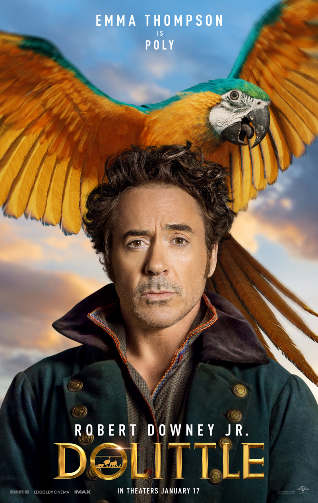
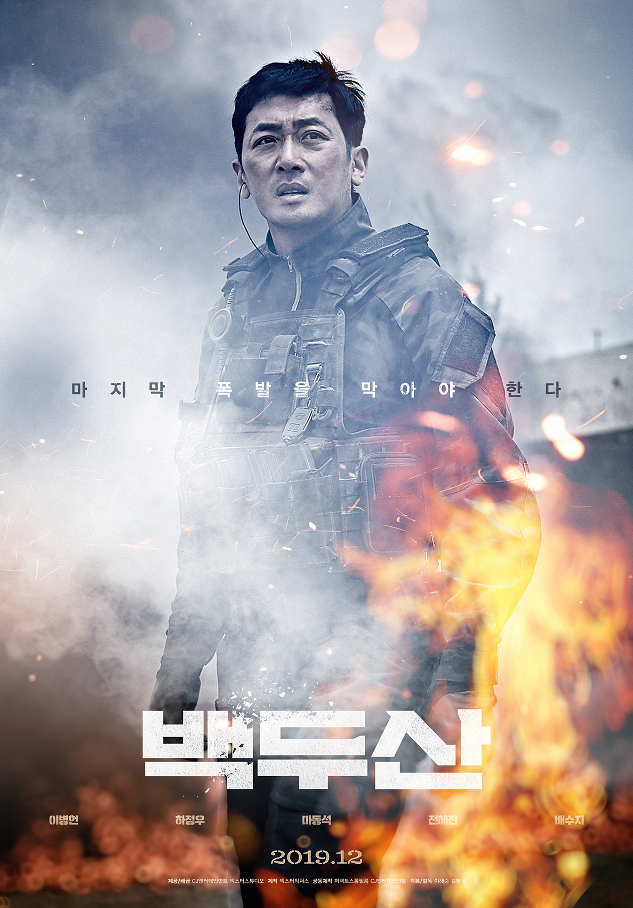
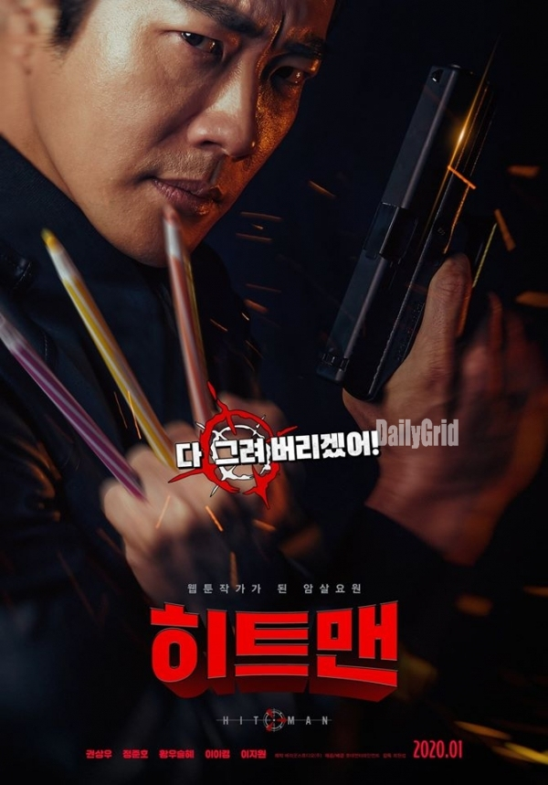
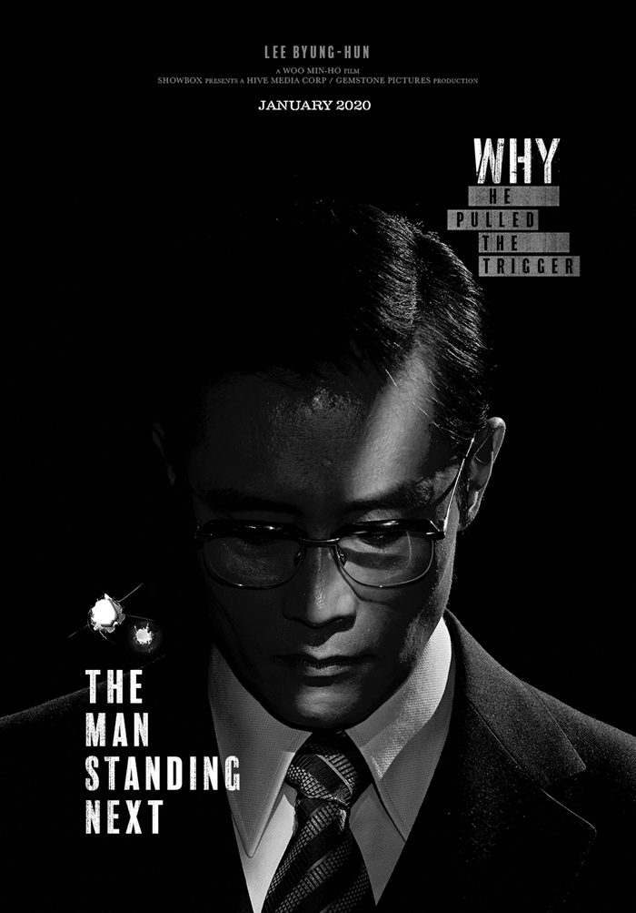

머나먼 사막 속 신비의 아그라바 왕국의 시대.
좀도둑 ‘알라딘’은 마법사 ‘자파’의 의뢰로 마법 램프를 찾아 나섰다가
주인에게 세 가지 소원을 들어주는 지니를 만나게 되고,
자스민 공주의 마음을 얻으려다 생각도 못했던 모험에 휘말리게 되는데…
Aladdin201996
인피니티 워 이후 절반만 살아남은 지구
마지막 희망이 된 어벤져스
먼저 떠난 그들을 위해 모든 것을 걸었다!
위대한 어벤져스
운명을 바꿀 최후의 전쟁이 펼쳐진다!
Avengers: EndGame201999

“어떤 위험이 따르더라도 우린 함께 하는 거야”
동물들과 소통하는 특별한 능력을 지닌 닥터 두리틀(로버트 다우니 주니어)은
사랑하는 사람을 잃고 세상과 단절한 채 동물들과 친구가 되어 살아간다.
어느 날 왕국이 위험에 빠지게 되자,
세상을 구하기 위해서 두리틀은 친구들과 함께 위험천만한 모험을 떠나게 되는데…
Dr.Dolittle201970

대한민국 관측 역사상 최대 규모의 백두산 폭발 발생.
갑작스러운 재난에 한반도는 순식간에 아비규환이 되고,
남과 북 모두를 집어삼킬 추가 폭발이 예측된다.
사상 초유의 재난을 막기 위해 ‘전유경’(전혜진)은
백두산 폭발을 연구해 온 지질학 교수 ‘강봉래’(마동석)의 이론에 따른 작전을 계획하고,
전역을 앞둔 특전사 EOD 대위 ‘조인창’(하정우)이 남과 북의 운명이 걸린 비밀 작전에 투입된다.
백두산201980

웹툰 작가가 되고 싶어 국정원을 탈출한
비밀 프로젝트 방패연 출신 전설의 암살요원 '준'.
그러나 현실은 연재하는 작품마다 역대급 악플만 받을 뿐이다.
술김에 그리지 말아야 할 1급 기밀을 그려버리고
예상치 않게 웹툰은 하루아침에 초대박이 나지만,
그로 인해 '준'은 국정원과 테러리스트의 더블 타깃이 되는데...
웹툰 작가가 된 전설의 암살요원, 그의 히트 본능이 깨어난다!
히트맨202080

“각하, 제가 어떻게 하길 원하십니까”
1979년 10월 26일, 중앙정보부장 김규평(이병헌)이 대한민국 대통령을 암살한다.
이 사건의 40일전, 미국에서는 전 중앙정보부장 박용각(곽도원)이
청문회를 통해 전 세계에 정권의 실체를 고발하며 파란을 일으킨다.
그를 막기 위해 중앙정보부장 김규평과 경호실장 곽상천(이희준)이 나서고,
대통령 주변에는 충성 세력과 반대 세력들이 뒤섞이기 시작하는데…
흔들린 충성, 그 날의 총성
남산의 부장들202088
모든 것이 다시 시작된다!
‘엔드게임’ 이후 변화된 세상,
스파이더맨 ‘피터 파커’는 학교 친구들과 유럽 여행을 떠나게 된다.
그런 그의 앞에 ‘닉 퓨리’가 등장해 도움을 요청하고
정체불명의 조력자 ‘미스테리오’까지 합류하게 되면서
전 세계를 위협하는 새로운 빌런 ‘엘리멘탈 크리쳐스’와
맞서야만 하는 상황에 놓이게 되는데…
Spider-man:파프롬홈201995
내 마법의 힘은 어디서 왔을까?
나를 부르는 저 목소리는 누구지?
어느 날 부턴가 의문의 목소리가 엘사를 부르고, 평화로운 아렌델 왕국을 위협한다.
트롤은 모든 것은 과거에서 시작되었음을 알려주며 엘사의 힘의 비밀과 진실을 찾아 떠나야한다고 조언한다.
위험에 빠진 아렌델 왕국을 구해야만 하는 엘사와 안나는 숨겨진 과거의 진실을 찾아
크리스토프, 올라프 그리고 스벤과 함께 위험천만한 놀라운 모험을 떠나게 된다.
자신의 힘을 두려워했던 엘사는 이제 이 모험을 헤쳐나가기에 자신의 힘이 충분하다고 믿어야만 하는데…
두려움을 깨고 새로운 운명을 만나다!
겨울왕국2201999
인생을 바꿀 수 있는 선택의 순간이 당신에게도 찾아온다면?
하루하루 힘겹게 음악을 하던 무명 뮤지션 잭. 모든 것을 포기하려던 순간, 전세계가 동시에 정전이 된다!
다음 날 세상에선 비틀즈가 사라지고, 오직 잭만이 그들의 음악을 기억하게 된다.
특별한 기회를 만난 잭은 세계적인 스타가 될 운명에 섰는데…
 내 마법의 힘은 어디서 왔을까? 나를 부르는 저 목소리는 누구지?
내 마법의 힘은 어디서 왔을까? 나를 부르는 저 목소리는 누구지?